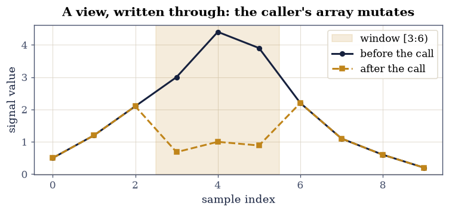
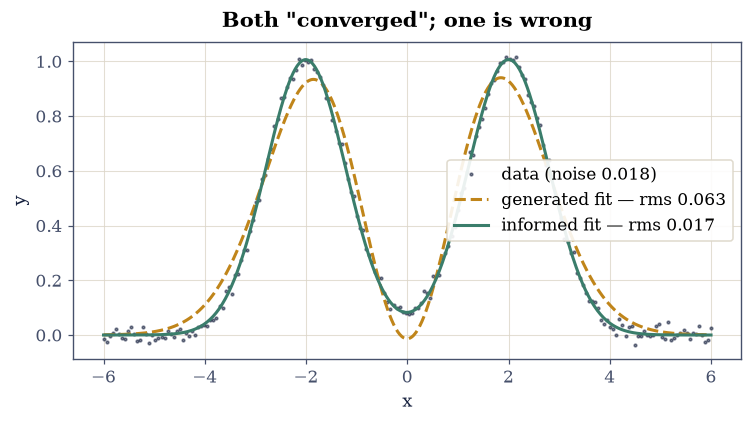
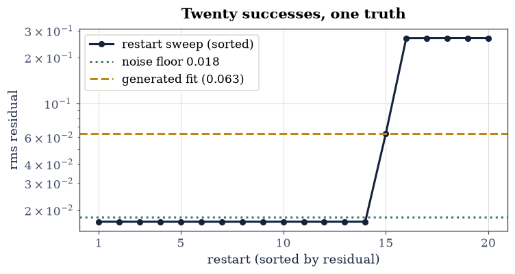

0.10 Scientific Python in the Age of AI#
Notebook overview#
The Meditations made this course’s one argument about the present decade: the machine now writes most scientific code better than we do, and everything that ever mattered — judgment, verification, the map of what exists — remains ours. This notebook is where that argument becomes procedure. We will not re-litigate it here; we will practice it.
The working arrangement is four verbs. You generate — and generate well, which means the prompt states the physics, the interface, and the check you intend to apply, because a request for verifiable code gets better code. You read — at recognition depth, every line understood on sight before it runs, the skill the Meditations called the durable half of knowing a library. You modify — toward your conventions and your check. And you verify — yourself, always. Three of these verbs are negotiable in any given cell. The fourth never is.
The body of the notebook is a failure gallery: four families of mistake that generated code commits fluently and silently, each staged here honestly — the code shown as an assistant would produce it, clean and plausible and confident — each run for real, and each closed with the rule that catches it. An array mutated through a view the model could not see. Digits lost, and integers wrapped, without a single warning. A fit that converged and was wrong — the centerpiece, and an early visit from a meta-rule this course will meet again in §7.24. And a function the model remembers fondly that your numpy has already removed. The discipline throughout is predict-then-run: before every staged cell, write one line saying what you expect. The gap between your prediction and the machine’s output is where the learning lives.
By the end, two conventions will be installed that every later notebook uses — the write-this-one-yourself flag and the “With your assistant” callout — and one habit will have been ported unchanged from the rest of the course: the ✓/✗ gate, aimed now at code you did not write.
Theory in brief#
There is little theory in the usual sense here; what this notebook installs is a working arrangement, and the arrangement is short enough to display. The loop of modern scientific computation, named once and used everywhere after,
with one asymmetry that gives the loop its character: the first three verbs may be shared with the machine, and the last may not. Prompting belongs to generate: a prompt that states the physics, the interface, and the intended check invites code built to pass that check; a prompt that omits the check invites code built merely to look right.
Two course conventions enact the arrangement. The write-yourself flag — a short bold line, “Write this one yourself — the implementation is the lesson.” — marks the few cells where the act of writing is the understanding: the core step of a method, the update rule, the inner loop. Everything unflagged is fair game to delegate; the silence is the permission. The assistant callout — an admonition titled With your assistant — does the opposite: it names one piece of code you are invited to generate, and it always ends by naming the check you will apply yourself, because the one inviolable rule of the arrangement is that the check is never delegated.
What must the check catch? The gallery below stages the four families of silent failure that generated code is prone to — not as anecdotes but as classes, each one a thing the model structurally cannot see from inside your program,
because the model sees neither your memory layout, nor your dtypes, nor your physics, nor the version of the library actually installed on your machine. Each family gets an exercise, a staged failure that genuinely fails, and a rule.
The last element is not new at all. Every notebook in this course ends its computations at a gate — a known truth, a computed answer, a stated tolerance — and the gate does not care who wrote the code. Ported to generated code it reads
and the four-step pattern behind it — state the truth first, compute, compare, and only then trust — is the shape of every “With your assistant” box in the volumes ahead.
For the argument these procedures serve, read the Meditations;
for the numerical floor under everything (rounding, the machine epsilon), it is
§0.1; the fit we ambush in Exercise 4 was built honestly in
§0.8; and the meta-rule that exercise discovers reaches its
mature home in §7.24. The
ground truth the model drifts from is the documentation itself: the numpy pages on
views versus copies and
data types, the
scipy.optimize.curve_fit
reference, and the NumPy 2.0 release notes
in which np.trapz was removed.
Setup#
One label convention, stated once and used throughout: cells introduced as code as an assistant produced it contain pre-generated snippets, shown exactly as a capable model emits them — clean, commented, confident. Nothing in this notebook calls a model; reproduce any of them with your own assistant if you like.
What Setup holds is data and one instrument: the imports, the two seeds that fix the
doublet data and the restart draws, the printed numpy version that Exercise 5 reads, and
a one-line ownership diagnostic wrapping numpy’s .base. The two pieces of machinery this
notebook is about are not here — you write the restart harness that catches false
convergence in Exercise 4, and the ✓/✗ gate itself, the habit the whole notebook exists to
port, in Exercise 6. It would be a poor notebook on never delegating the check that handed
you the check.
The Setup below holds this notebook’s data and instruments — nothing you are asked to build. It is collapsed so the building stays yours; expand it whenever you want the details.
numpy 2.5.2
Exercise 1 — The arrangement, and the two conventions#
Four verbs, one rule. This exercise installs the working loop of Eq. 63 and the two conventions that carry it through the rest of the course.
The prompt discipline. Below are two prompts an assistant might receive for the same task. Read them and state, in one sentence each, what kind of code each one invites.
Prompt A. “Write a Python function that integrates a damped oscillator \(\ddot{x} = -x - 0.1\dot{x}\) from \(x(0)=1\), \(\dot{x}(0)=0\) to \(t=10\).”
Prompt B. “Write a Python function that integrates a damped oscillator \(\ddot{x} = -x - 0.1\dot{x}\) from \(x(0)=1\), \(\dot{x}(0)=0\) to \(t=10\), using
scipy.integrate.solve_ivpwithrtol=1e-9, returning(t, x)arrays. I will check that the energy \(E = (\dot{x}^2 + x^2)/2\) decays monotonically and that the \(t\le 1\) segment matches the undamped solution \(\cos t\) to 5%.”Prompt B states the physics, the interface, and the check — and code written to face a named check is code written more carefully. That is the whole discipline: tell the machine how you intend to catch it, and you will have less to catch.
The two conventions, shown once. The write-yourself flag looks like this in a later notebook, attached to a method-core cell:
Write this one yourself — the implementation is the lesson.
It marks the few cells where writing the method is understanding it (the symplectic step, the Metropolis update, the eigensolver loop). Everything unflagged is delegable; the silence is the permission. And the assistant callout looks like this:
With your assistant
Ask your assistant for a one-line numpy expression giving the machine epsilon of
float32— then check its answer againstnumpy.finfo(numpy.float32).epsyourself. Whatever it produced, the check was yours. Every box like this one, throughout the course, ends the same way.Reflect (one written sentence): of the four verbs, which do you currently skip most often — and what has it cost you?
✓ the working arrangement: four verbs, and the check is never delegated
True
Exercise 2 — Predict, then run: the aliasing trap#
The model cannot see your memory (Eq. 64, family one). Below is a helper of a kind assistants produce constantly: extract a window from a signal and normalize it to unit maximum. It is clean, documented, and it looks obviously harmless.
Read the generated helper. Predict before you run — write one line: after calling
normalized_window(signal, 3, 6), what doessignalcontain?Run and reconcile. Diagnose what happened with
is_viewand the.baseattribute: slicing a numpy array returns a view — a window onto the same memory — and the in-place/=wrote through it.Fix it with
.copy()at the one place independence was intended, re-run, and state the rule: for every array in generated code, know whether it owns its memory.
# --- code as an assistant produced it — reproduce with your own if you like ---
def normalized_window(data, lo, hi):
"""Extract the window [lo, hi) and normalize it to unit maximum."""
window = data[lo:hi]
window /= window.max()
return window
signal = np.array([0.5, 1.2, 2.1, 3.0, 4.4, 3.9, 2.2, 1.1, 0.6, 0.2])
signal_before = signal.copy() # kept so the damage can be shown, and plotted
w = normalized_window(signal, 3, 6)
print("window returned: ", np.round(w, 4))
print("signal[3:6] now: ", np.round(signal[3:6], 4), " <- was", signal_before[3:6])
print("original mutated? ", not np.array_equal(signal, signal_before))
window returned: [0.6818 1. 0.8864]
signal[3:6] now: [0.6818 1. 0.8864] <- was [3. 4.4 3.9]
original mutated? True
The window came back correctly normalized — and the original signal was silently
overwritten in place: signal[3:6] now holds \([0.6818,\ 1.0,\ 0.8864]\) where
\([3.0,\ 4.4,\ 3.9]\) used to be. Nothing raised, nothing warned. The model that wrote this
helper produces the idiom constantly and cannot catch it in its own output, because the
defect is not in any single line — it is in the ownership of the memory the lines touch.
slice is a view: True (.base is signal_before: True)
copy is a view: False
fixed: window [0.6818 1. 0.8864] | original intact: True

Fig. 55 The signal before and after one call to the generated window helper. The three samples inside the window (shaded) were silently overwritten with their normalized values through a numpy view; every sample outside is untouched, which is exactly why the damage is easy to miss.#
validate.check(
not np.array_equal(signal, signal_before)
and np.allclose(signal[3:6], [0.6818181818, 1.0, 0.8863636364], rtol=1e-8)
and is_view(signal_before[3:6])
and not is_view(signal_before[3:6].copy())
and np.array_equal(signal2, signal_before),
"views seen, memory owned: the mutation demonstrated, diagnosed, and fixed",
)
✓ views seen, memory owned: the mutation demonstrated, diagnosed, and fixed
True
Exercise 3 — Predict, then run: the dtype traps#
Digits lost and integers wrapped, both in silence (Eq. 64, family two). A
dtype is not an implementation detail; it is a contract about what the array can represent,
and generated code inherits it from wherever the data came from — an image loader hands you
uint8, a GPU pipeline hands you float32 — without ever announcing the fact.
Predict before you run: summing \(10^7\) copies of \(0.1\) in
float32— what comes back? Then run, readnumpy.finfo(numpy.float32), and say where the digits went. One honest wrinkle: numpy sums arrays pairwise, which limits the damage and makes its exact size depend on the summation order — which is precisely why “it looked fine on my machine” is not a check.Predict before you run: doubling photon counts \([200, 220, 210]\) stored as
uint8— what comes back? Then run, readnumpy.iinfo(numpy.uint8), and state the inheritance rule: the dtype rides in from the data source.The boundary discipline, one line of practice: check the dtype at every load, promote deliberately (
astype(numpy.float64)), and never assumefloat64arrived on its own.
# --- code as an assistant produced it — reproduce with your own if you like ---
# "Accumulate ten million samples of 0.1 and report the total."
samples = np.full(10_000_000, 0.1, dtype=np.float32)
total = samples.sum()
print(f"sum of 1e7 × 0.1 in float32: {total:.6f} (true value: 1000000.0)")
sum of 1e7 × 0.1 in float32: 1000000.125000 (true value: 1000000.0)
Off by \(0.125\) — a relative error of \(1.25\times 10^{-7}\), delivered without a warning of
any kind. float32 carries roughly seven decimal digits
(\(\varepsilon \approx 1.2\times10^{-7}\); §0.1 built this floor), and
a million-fold accumulation spends them. Pairwise summation is what kept the loss this
small: a naive left-to-right loop would have fared far worse, and the difference between
the two is invisible in the code that generated the array.
# --- code as an assistant produced it — reproduce with your own if you like ---
# "Double the per-pixel photon counts."
counts = np.array(
[200, 220, 210], dtype=np.uint8
) # dtype inherited from the image loader
doubled = counts + counts
print("doubled counts:", doubled.tolist(), " (intended: [400, 440, 420])")
doubled counts: [144, 184, 164] (intended: [400, 440, 420])
dtype eps / max the silent failure
float32 eps = 1.19e-07 ~7 digits, then quiet loss
float64 eps = 2.22e-16 ~16 digits (the course default)
uint8 max = 255 wraps modulo 256, no warning
int64 max = 9.2e+18 wraps too — just much later
promoted deliberately: [400.0, 440.0, 420.0]
validate.close(
[float(total), *doubled.tolist(), *counts_ok.tolist()],
[1000000.125, 144, 184, 164, 400.0, 440.0, 420.0],
"silence, quantified: the float32 loss and the uint8 wrap, to the digit",
rtol=1e-9,
)
✓ silence, quantified: the float32 loss and the uint8 wrap, to the digit [max|Δ| = 0 (rtol=1e-09, atol=1e-09)]
True
Exercise 4 — The fit that reported success#
Converged is not correct (Eq. 64, family three — and the centerpiece).
§0.8 built honest fits; this exercise ambushes one. The data
below are a resolved doublet: two Gaussians of unit amplitude at \(\mu = \mp 2\) with width
\(\sigma = 0.8\), plus Gaussian noise of scale \(0.018\). The generated snippet asks
scipy.optimize.curve_fit for a two-Gaussian fit with a plausible-looking initial guess —
one narrow component, one broad, both centered, the sort of p0 a model writes when it does
not know where the peaks are.
One check will be a feeling made numerical: an honest fit’s rms residual sits at the noise scale, and anything well above it is a fit describing something other than the data. The other is institutional. A single optimizer run answers only “did I stop?”, so the standard remedy is a sweep of restarts from many seeded initial guesses: the sweep maps the landscape, and the gap between the lowest residual and any plateau above it is the signature of local minima wearing a success flag.
Read the snippet. Predict before you run: will it raise? If not, roughly what parameters will it report?
Catch it with a check, not a feeling. Compare the fit’s rms residual against the noise scale you know is in the data; then refit with an informed p0 and overlay both. Read the collapsed fit’s parameters — the second thing the success flag never asked you to look at.
Write
fit_with_restarts(f, x, y, p0_draw, n, rng): refitffromninitial guesses drawn byp0_draw(rng), returning for each restart the rms residual of the converged fit and its parameters, and(inf, None)wherecurve_fitgives up. Write this one yourself — the implementation is the lesson.Institutionalize the catch: run it over twenty seeded p0 draws and put the residual floor and the plateau above it in one figure.
State the headline — the meta-rule of §7.24, arriving early: success flags test convergence, not truth. The optimizer answered “did I stop?”, never “am I right?”.
def two_gauss(x, a1, m1, s1, a2, m2, s2):
"""Sum of two Gaussians — the doublet model of this exercise.
Parameters
----------
x : numpy.ndarray
Sample positions.
a1, m1, s1 : float
Amplitude, mean, and width of the first component.
a2, m2, s2 : float
Amplitude, mean, and width of the second component.
Returns
-------
numpy.ndarray
The model evaluated at `x`.
"""
return a1 * np.exp(-((x - m1) ** 2) / (2 * s1**2)) + a2 * np.exp(
-((x - m2) ** 2) / (2 * s2**2)
)
def rms_residual(p, x, y):
"""Root-mean-square residual of the model against the data.
The one number the success flag never reports: how far, on average,
the converged model sits from the points it claims to describe.
Parameters
----------
p : sequence of float
Model parameters, unpacked into `two_gauss`.
x, y : numpy.ndarray
The data.
Returns
-------
float
``sqrt(mean((y - model)^2))``.
"""
return float(np.sqrt(np.mean((y - two_gauss(x, *p)) ** 2)))
NOISE = 0.018
rng_data = np.random.default_rng(DATA_SEED)
x_fit = np.linspace(-6, 6, 200)
y_fit = two_gauss(
x_fit, 1.0, -2.0, 0.8, 1.0, 2.0, 0.8
) + NOISE * rng_data.standard_normal(x_fit.size)
# --- code as an assistant produced it — reproduce with your own if you like ---
# "Fit a sum of two Gaussians to the data."
import warnings
with warnings.catch_warnings():
warnings.simplefilter("ignore") # the one whisper there was, silenced by habit
p0 = [1, 0, 0.5, 1, 0, 2.0] # rough guess: one narrow component, one broad
popt, pcov = curve_fit(two_gauss, x_fit, y_fit, p0=p0, maxfev=20000)
print("converged without error; fitted parameters:")
print(f" a1 = {popt[0]:+9.2f} mu1 = {popt[1]:+.4f} sigma1 = {popt[2]:+.3f}")
print(f" a2 = {popt[3]:+9.2f} mu2 = {popt[4]:+.4f} sigma2 = {popt[5]:+.3f}")
converged without error; fitted parameters:
a1 = -285.67 mu1 = -0.0006 sigma1 = -1.303
a2 = +285.65 mu2 = -0.0006 sigma2 = +1.309
No exception, parameters returned — success, as an optimizer counts success. Now read what it actually reported: both means at the same point near zero — one blob where two peaks exist — amplitudes of roughly \(\mp 259\) on data whose height is one, and a negative width, “working” only because \(\sigma\) enters the model squared. The curve these parameters draw (next figure) looks respectable at a glance; the parameters themselves are physically absurd, and the only warning was a covariance whisper the generated code silenced and never read. Read — the second verb — catches in five seconds what the success flag will never mention. The residual check below turns that glance into a number.
noise scale in the data : 0.0180
rms residual, generated fit : 0.0632 (3.5× the noise)
rms residual, informed fit : 0.0168 (at the floor)
ratio bad/good : 3.76
informed means : -2.0057, +2.0017 (truth: ∓2)

Fig. 56 The doublet data with the two converged fits. The generated fit (dashed) reported success and looks plausible at arm’s length, but it has collapsed both means onto one central blob and misses both peaks and the valley; the informed fit (solid) sits on the data at the noise floor. Between the two curves lies a factor of 3.8 in residual that no success flag ever mentioned.#
restarts at the floor (<0.02): 14/20 best rms: 0.0168
sorted rms: [0.0168 0.0168 0.0168 0.0168 0.0168 0.0168 0.0168 0.0168 0.0168 0.0168
0.0168 0.0168 0.0168 0.0168 0.0632 0.268 0.268 0.2682 0.2682 0.2682]

Fig. 57 The rms residual of twenty restarted fits, sorted, on a logarithmic axis, with the generated fit’s residual and the noise floor marked. Fourteen restarts find the floor; the others converge onto plateaus of local minima well above it. Every point on this plot is a fit that reported success.#
validate.close(
[popt_good[1], popt_good[4]],
[-2.0, 2.0],
"the informed fit recovers the doublet",
rtol=0.02,
)
validate.check(
abs(popt[1] - popt[4]) < 0.01 and r_bad / r_good > 3 and n_floor >= 12,
"converged, wrong, caught: both means collapsed onto one point, the residual "
"several times the floor, and the restart sweep separates floor from plateau",
)
✓ the informed fit recovers the doublet [max|Δ| = 0.00574764 (rtol=0.02, atol=1e-09)]
✓ converged, wrong, caught: both means collapsed onto one point, the residual several times the floor, and the restart sweep separates floor from plateau
True
Exercise 5 — The function the model remembers#
Training-data lag, live on your own stack (Eq. 64, family four). A model’s knowledge of a library is a snapshot of its training data; your installed version keeps moving after the snapshot is taken. Deprecations ripen into removals, and the assistant emits, with perfect confidence, calls into a past that your machine no longer contains.
Read the version line Setup printed, this time with your eyes open, then predict before you run: the generated snippet below integrates \(\sin x\) over \([0, \pi]\) with
np.trapz. On the numpy printed above — does it run?Repair it with the survivor,
numpy.trapezoid, and state the mechanism: the assistant’s knowledge lags the stack by construction.Read the ground truth. The NumPy 2.0 release notes record the removal (
np.trapzwas deprecated and expunged in the 2.0 main-namespace cleanup); the changelog is the physicist’s friend, because it is the one document that moved with the library while the model stood still. And one dry line of course history: this course’s style rules bannednp.trapzbefore numpy removed it. Good habits age well.
# --- code as an assistant produced it — reproduce with your own if you like ---
# "Integrate sin(x) from 0 to pi with numpy."
x_int = np.linspace(0, np.pi, 201)
try:
area = np.trapz(np.sin(x_int), x_int)
print(
f"np.trapz returned {area:.6f} — a numpy 1.x is installed; 2.0 removes this call"
)
except AttributeError as err:
print(f"AttributeError: {err}")
print(
"— this is numpy ≥ 2: the function the model remembers is gone from the namespace"
)
AttributeError: module 'numpy' has no attribute 'trapz'
— this is numpy ≥ 2: the function the model remembers is gone from the namespace
np.trapezoid(sin, [0, π]) = 1.999959 (exact: 2, gap 4.1e-05)
validate.check(
churn_demonstrated,
"the stack moved; the docs knew: trapz gone on this image, trapezoid verified against "
"the closed form",
)
✓ the stack moved; the docs knew: trapz gone on this image, trapezoid verified against the closed form
True
Exercise 6 — The gate, ported#
The course’s oldest habit, aimed at code you did not write (Eq. 65). The snippet below is generated integration code — correct, as it happens, but that is exactly what you do not yet know when it arrives. You will not take it on faith either way. The known truth it must reproduce is the half Gaussian integral \(\int_0^\infty e^{-x^2}\,dx = \sqrt{\pi}/2\), and the four-step pattern that holds it there is Eq. 65: state the truth, take the computed answer, compare at a stated tolerance, and only then trust. This is the one piece of code in the notebook that could not possibly be delegated, since delegating it is the single thing the arrangement forbids.
Write
gate(computed, truth, tol, label), the four-step pattern as one function: measure \(|\text{computed} - \text{truth}|\), print a ✓ or a ✗ with the label and the tolerance, and return the verdict as a bool. Unlikeecp.validateit must never raise, because the next part fails it on purpose. Write this one yourself — the implementation is the lesson.Run it on the generated number at a tolerance of \(10^{-12}\) — agreement to machine zero.
Break it deliberately: perturb the integrand by one part in \(10^6\) and watch the gate catch the change. A gate that has never failed has never been tested.
Name the pattern for reuse: every “With your assistant” box in this course ends exactly here — generated answer, your check, stated tolerance, then trust.
# --- code as an assistant produced it — reproduce with your own if you like ---
# "Integrate exp(-x^2) from 0 to infinity."
gaussian_integral, quad_err = quad(lambda t: np.exp(-t * t), 0, np.inf)
print(
f"quad returned {gaussian_integral!r} (quad's own error estimate: {quad_err:.1e})"
)
quad returned 0.8862269254527579 (quad's own error estimate: 7.1e-09)
✓ generated ∫₀^∞ e^{-x²} dx against √π/2: |computed − truth| = 0.0e+00 (tolerance 1e-12)
✗ the same gate, integrand perturbed by 1e-6: |computed − truth| = 8.9e-07 (tolerance 1e-12)
the gate passed the honest number and failed the corrupted one: True
validate.close(
gaussian_integral,
np.sqrt(np.pi) / 2,
"the gate on generated code: quad against the closed form",
atol=1e-12,
)
validate.check(
gate_ok and not gate_broken,
"and the gate itself is tested: it passes truth and catches a 1e-6 corruption",
)
✓ the gate on generated code: quad against the closed form [got 0.886227 vs expected 0.886227 (rtol=1e-06, atol=1e-12)]
✓ and the gate itself is tested: it passes truth and catches a 1e-6 corruption
True
Exercise 7 — Synthesis: neither disavowal nor deference#
Responsible science in this decade neither disavows the assistant nor defers to it. Disavowal wastes the best production tool the field has ever had — the Meditations were frank about that, and so is this course, which assumes the assistant on every page. Deference ships plausible wrong answers at scale: every exercise above was a rehearsal of how fluent, how confident, and how silent those answers are. The working scientist’s position is the third one this notebook has been practicing all along — delegate the typing, never the judgment; read everything; predict before running; and hold every number, yours or the machine’s, against something you already trust.
The assistant has made one kind of scientist obsolete: the one whose value was remembering how to type the incantation. It has made another kind more valuable than ever: the one who can look at a running, confident, plausible answer and ask it to prove itself. This course is for the second kind, and this notebook is where that stops being a slogan and becomes a habit.
From here, the rest of the course assumes exactly this arrangement: the flags mark what you write, the callouts invite what you generate, and the gates, always, are yours. One forward pointer is worth stating: the failures staged here were language-flavored — views, dtypes, optimizers, version churn. From Volume I onward the checks grow physics-flavored — conservation laws, exact limits, known spectra — which are stronger truths to hold code against, and exactly why the physics volumes are where this discipline comes into its own.
Notebook summary#
The working arrangement of Eq. 63 — generate, read, modify, verify — with its one asymmetry: the verify verb is never delegated. The prompt discipline that belongs to generate: state the physics, the interface, and the intended check.
Two conventions, now installed course-wide: the write-yourself flag (method-core cells only; silence elsewhere is the delegation permission) and the “With your assistant” callout (one per notebook at most; its closing check is always yours).
The failure gallery of Eq. 64, every failure staged for real: a view silently mutated
signal[3:6]to \([0.6818, 1.0, 0.8864]\) (.baseis the diagnostic,.copy()the fix);float32summed \(10^7 \times 0.1\) to \(1000000.125\) anduint8doubled \([200,220,210]\) into \([144,184,164]\), both silently (finfo/iinfoquantify, promote at the boundary); a two-Gaussiancurve_fitconverged without error onto one collapsed blob — both means equal, amplitudes \(\mp 259\), a negative width — at \(3.8\times\) the honest residual, caught by the residual-vs-noise check and a twenty-restart sweep (fourteen at the floor, the rest on plateaus); andnp.trapz, which the model remembers, is gone from numpy ≥ 2 (np.trapezoidis the survivor; the release notes are the ground truth).The headline, early: success flags test convergence, not truth — mature home in §7.24.
The gate of Eq. 65, ported to generated code and tested: it passed \(\int_0^\infty e^{-x^2}dx = \sqrt{\pi}/2\) at machine zero and caught a one-part-in-\(10^6\) corruption.
Outlook#
Every “With your assistant” box in Volumes I–VII is this notebook in one paragraph: a named generation, and a named check you run yourself. The fit of §0.8 has now been revisited adversarially; the rounding floor of §0.1 sat under every trap here. The meta-rule reaches its mature form on Matsubara sums in §7.24, where convergent and correct part ways one last time. And the argument all of this procedure serves is the course’s opening pages: the Meditations. The physics volumes are ahead; the arrangement rides along on every page of them.